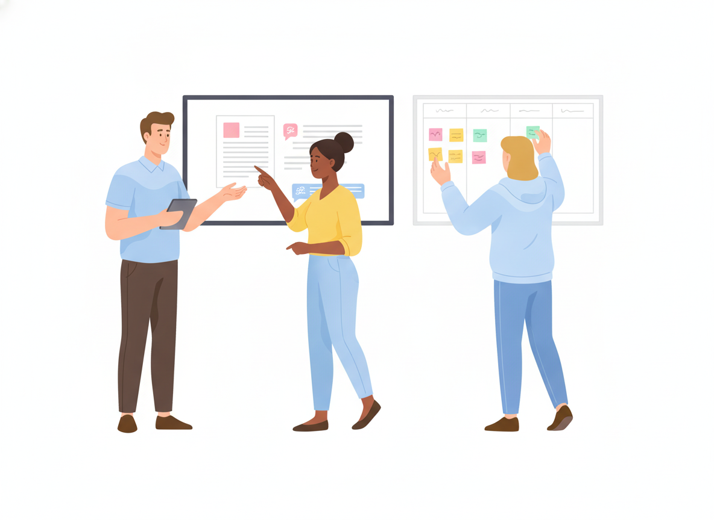

Technical Editing: How to Review Documentation in Four Passes
You finished the draft. The steps are all there and the screenshots are current. Then a customer follows the guide, gets stuck at step four, and opens a support ticket. Editing is the step that catches that problem before readers do. Most teams squeeze it into one quick read-through right before they hit publish.
This guide shows how to turn technical editing into a repeatable process. You will learn the passes to run, in what order, who should do each one, where AI fits, and what to check. A copyable checklist is at the end.
What is technical editing?
Technical editing is reviewing documentation so it is accurate, complete, clear, and consistent for the people who will use it. It goes beyond fixing typos. A technical editor asks whether a reader can understand the content and act on it. Grammar is only one part of that.
The textbook Open Technical Communication calls technical editing "a highly rhetorical, detail-oriented process." It is also recursive: the same material gets reviewed several times, at different depths.
That idea of depth is old. In the late 1970s, editors at NASA's Jet Propulsion Laboratory defined "levels of edit." This framework sorts editing work into categories, from coordination and policy checks to language and substantive edits. A light level covers only a couple of those categories, and the deepest level covers all of them. Later models simplified it. Carolyn Rude's model, for example, reduces it to two types: comprehensive editing (content, organization, and design) and copy editing (grammar, formatting, and sentence structure).
You don't need to adopt any formal scheme. The useful lesson is simpler: different problems need different passes, and big problems come first.
Why one read-through isn't enough
When you try to check everything at once, you check nothing well. You can't judge whether a section belongs in the guide while you're also hunting for a missing comma. Whatever you're looking for in that moment is what you find.
Order matters too. Google's technical writing course says this about using AI for review: "We recommend fixing organizational issues before editing grammar and style issues." The same rule applies to human editors. Polishing a paragraph you later delete is wasted work.
Editing also changes what readers experience. In Nielsen Norman Group's classic study of how people read on the web, 79% of test users always scanned new pages instead of reading word by word. A version rewritten to be concise, scannable, and objective scored 124% better on usability than the original. Documentation readers are usually in the middle of a task, so every extra second spent hunting for the next step counts.
The technical editing process: four passes
Here is a technical editing process that works for documentation teams of any size. It combines common review workflows used in open-source documentation, such as MediaWiki's, with the levels-of-edit idea.

Pass 1: Self-edit (the writer)
The writer is always the first reviewer. Before anyone else sees the draft, the writer should:
- Take a break first. Google's course suggests coming back "after an hour (or two or three)" so you read with fresh eyes.
- Change the context. Print the draft or paste it into a new document with a different font. Familiar text hides its own mistakes.
- Read it out loud. Awkward phrasing and sentences that run too long are easier to hear than to see.
- Read as your audience. Is the purpose clear in the first few lines? Is every unfamiliar term defined or linked?
- Check against your style guide. If you don't have one, start with a few rules: active voice, second person ("you"), and numbered lists for steps. Our guide to creating a documentation style guide walks through the rest.
Pass 2: Technical review (a subject matter expert)
A subject matter expert (SME) checks that the content is correct and complete. This SME is usually an engineer, product manager, or senior support agent. The reviewer is not there to fix wording. Their questions are:
- Are the facts, settings, names, and numbers right for the current version?
- Does every procedure actually work when you follow it step by step?
- Is anything missing: prerequisites, permissions, warnings, edge cases?
- Would a new user be able to follow this without help?
Ask SMEs to test procedures, not just read them. A step that "looks right" but fails in the product is exactly the kind of gap that turns into a support ticket.
Pass 3: Editorial review (an editor or peer)
Now a second writer, editor, or trained peer reviews structure and language. They don't need to be an expert in the product. Google's course points out that a peer editor who knows your style guide can give "specific, constructive comments" without deep subject knowledge.
Work from big to small:
- Structure. Does the order match the reader's task? Do headings describe what's under them? Is each section focused on one job?
- Scannability. Short paragraphs, one idea each. Lists for parallel items. Key terms easy to spot. In the NN/g study, concise and scannable text produced the largest usability gains.
- Style and clarity. Active voice, plain words, consistent terms. If you call it a "workspace" in one place, don't call it a "project" in the next. Our plain language guide covers the most common fixes.
- Copyedit. Grammar, punctuation, spelling, capitalization, and number formats.
Pass 4: Final check and approval (the owner)
Right before publishing, the document owner runs a short proofread:
- All review comments are resolved or answered.
- Links work and point to the right places.
- Images are current, labeled, and have alt text.
- The page stays within its scope and follows the style guide.
- Someone with authority signs off.
Not every change needs all four passes. A typo fix in an FAQ might need only a self-check. A new setup guide for a major release needs the full sequence. Decide the depth up front, so reviewers know what they're signing up for.
How to give edits writers will actually accept
Editing is collaborative. Writers and SMEs are more likely to act on feedback that respects their work. The Open Technical Communication textbook offers practical rules:
- Suggest, don't silently rewrite. Make large changes only with permission. Leave a comment that explains the change instead.
- Give a reason. "Always be prepared to justify your edits with a style guide reference."
- Use clear, polite wording. "Consider splitting this step in two" works better than vague hints or passive phrasing like "it might be thought that…"
- Stay in your lane. If you spot a problem outside your pass, such as a possible technical error during a copyedit, flag it for the right person instead of guessing.
Also keep a running style sheet: a short, alphabetized list of decisions made during editing. Examples are "log in (verb) / login (noun)" or "use 'select,' not 'click.'" The next reviewer won't have to make the same call again.
Where AI fits in technical editing
AI tools can speed up editing, especially the mechanical parts. Google's course on using LLMs in technical writing says "LLMs excel at critical analysis." It suggests narrow prompts such as "Identify any passive voice in the following passage" or "Find grammatical, punctuation, and spelling issues."
Use AI as an extra reviewer, not the last one:
- Good uses: spotting passive voice, long sentences, inconsistent terms, and grammar slips. It can also give a first opinion on structure.
- Weak spots: the same course warns that "Responses sometimes contain errors. Always check responses carefully." LLMs can give different answers to the same prompt, and they tend to treat whatever you paste in as true. They can't check that a procedure works on your product.
The technical review in Pass 2 still needs a human who knows the product. So does the final sign-off.
Technical editing checklist
Copy this documentation review checklist into your team's template.
Self-edit (writer)
- ☐ Purpose is clear in the first few lines
- ☐ Every unfamiliar term is defined or linked
- ☐ Draft re-read after a break, in a new format or out loud
- ☐ Follows the style guide (voice, person, lists for steps)
Technical review (SME)
- ☐ Facts, names, settings, and numbers match the current version
- ☐ Every procedure tested step by step
- ☐ Prerequisites, permissions, and warnings included
- ☐ No missing steps or edge cases a new user would hit
Editorial review (editor or peer)
- ☐ Headings describe the content and follow the reader's task
- ☐ One idea per paragraph; lists for parallel items
- ☐ Active voice, plain words, consistent terminology
- ☐ Grammar, spelling, punctuation, and formatting are clean
Final check (owner)
- ☐ All comments resolved
- ☐ Links work; images are current and have alt text
- ☐ Scope and style guide respected
- ☐ Approved by the document owner
Make review part of how you publish
Technical editing works best when it's built into your workflow, not tacked on at the end. In Sonat, writers draft in Google Docs or the built-in editor. Reviewers leave comments, and approval workflows route each topic to the right people, one after another or in parallel. The built-in readability guide scores each page, so writers can tighten hard-to-read text before an editor sees it. And the version archive lets you restore any earlier version if an edit goes wrong.
Start small. Pick your next important guide, run the four passes, and see what each one catches. Then make the checklist part of every page you publish. For more on writing documentation that holds up to review, see our technical writing best practices.